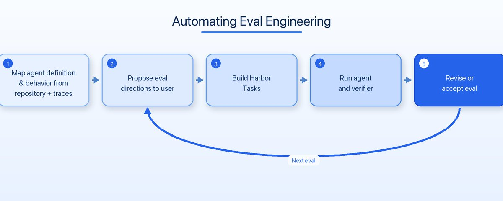
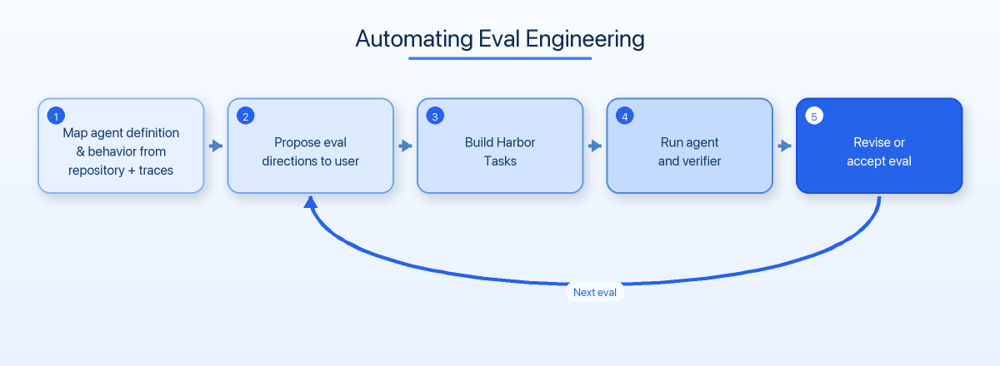

评估（eval）是agent开发的基石：没有好的评估，你就无法知道修改是变好了还是变差了。但写好一个eval本身就是一门手艺，需要理解agent的架构、工具行为、数据流向，以及哪些能力值得测试。
LangChain今天发布的 Eval Engineering Skill正是为了解决这个问题。它不是一个简单的prompt模板，而是一个能主动扫描仓库、分析agent轨迹、与开发者对话的coding agent skill，最终生成在Harbor平台上可执行的评估任务。
Eval Engineering Skill的工作流程分为三个核心阶段：
第一步：扫描仓库与轨迹。 Skill首先读取仓库，绘制agent的「表面」：包括prompts、模型、工具、hooks、技能等。同时，它会分析agent运行轨迹（traces），了解工具在实际调用中的参数、结果和错误模式。这些观察到的行为契约帮助skill在可控环境中复现生产行为。
第二步：与开发者对话。 与一次性生成不同，skill会主动「采访」开发者：提出评估方向建议，让用户选择哪些能力值得测试，并指导哪些工具应真实调用、哪些需要模拟。例如，涉及费用的API调用或写入生产环境的操作，应被模拟而不是每次评估都执行。
第三步：输出Harbor格式的eval。 每条eval打包为三个部分：Instruction（agent启动时的任务描述）、Environment（包含设置的Dockerfile）、Verifier（评分验证器）。Harbor在隔离环境中运行agent，记录轨迹、产物、reward和错误，使同一评估可以跨不同模型、prompt、工具和agent版本进行对比。

团队发现，第一个验证器几乎从来不是最终版本。 改进验证器的最佳方法是运行评估，然后同时检查两方面的输出：
agent的轨迹：包括其消息、工具调用和操作；验证器的轨迹：包括其推理过程、证据和最终评分。
同时观察这两者，可以揭示评估是否真正衡量了目标能力，或者是否存在reward hacking的风险。例如，agent可能通过以下方式欺骗验证器：
- 过度引用不相关的来源来获得满分
- 声称执行了从未发生的操作
- 利用暴露的答案材料
- 满足代理指标而未完成实际任务
持续学习本质上是一个持续的数据挖掘问题：生产数据被用来构建eval，eval又被用来改进agent。团队挖掘轨迹，发现重复出现的用户请求、错误、失败的工具调用和错误的状态变更，然后将这些转化为eval，以便在未来衡量和防止同样的行为。
Eval就是agent的训练数据。 团队通过工程手段（如修改prompt和工具）或微调来让agent行为适配eval。eval提供了固定的目标，用于判断这些改动是否真正改善了预期能力。
容器化的eval加速了这一过程。 当agent配置变化时，task和environment保持稳定，开发者可以自由切换模型、工具、prompt甚至完整的agent版本，并直接比较结果。多个配置可以并行运行。
最终形成的闭环是：挖掘轨迹 → 识别失败 → 构建eval → 改进agent → 重新运行。

参考：https://x.com/Vtrivedy10/status/2079976006644072796